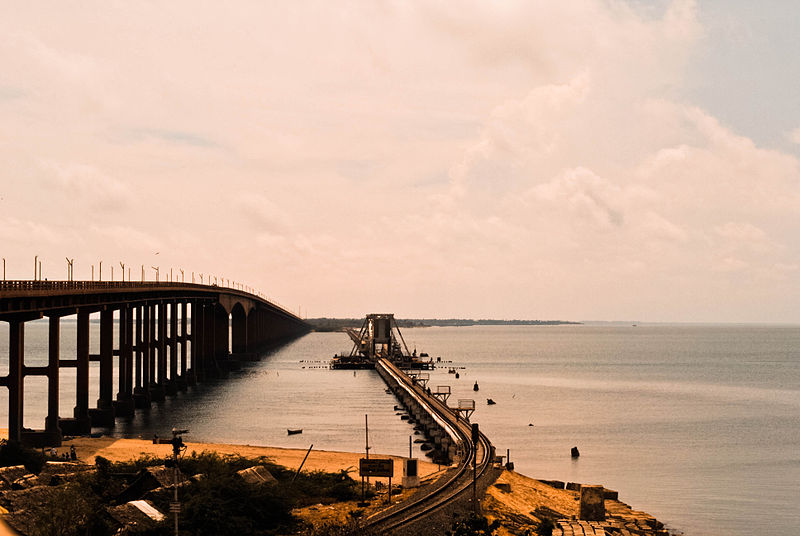
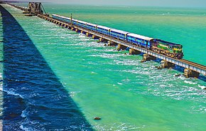
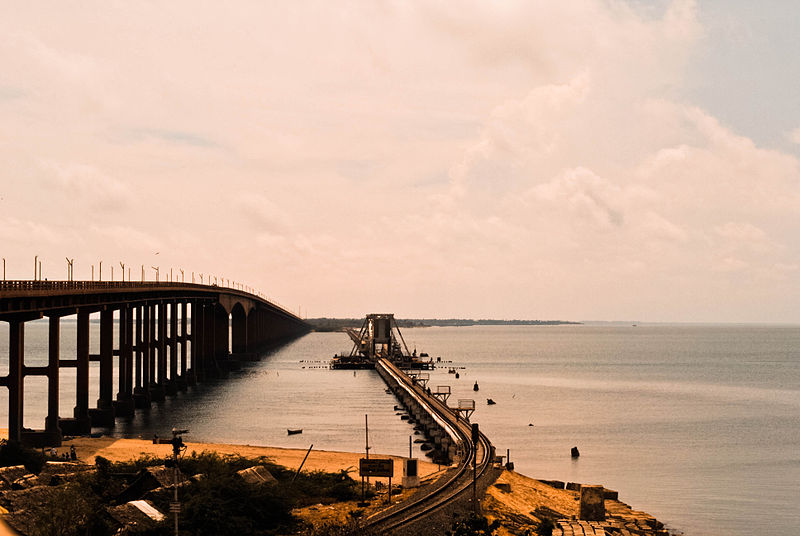
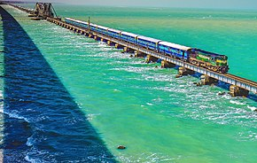

Pamban Bridge is a railway bridge which connects the town of Mandapam in mainland India with Pamban Island, and Rameswaram. Opened on 24 February 1914,[1] it was India's first sea bridge, and was the longest sea bridge in India until the opening of the Bandra-Worli Sea Link in 2010. The rail bridge is, for the most part, a conventional bridge resting on concrete piers, but has a double-leaf bascule section midway, which can be raised to let ships and barges pass through. Until 1988, the Pamban bridge was the only surface transport that connected Tamil Nadu's island of Rameswaram to the mainland. In December 2018, the bascule of this bridge was damaged, which suspended transportation on the bridge for 3 months. Rail movement was again restored on 27 February 2019.
In 1988, a road bridge was also constructed parallel to the rail bridge. This road bridge is also known as Annai Indira Gandhi Road Bridge. The Annai Indira Gandhi Road Bridge connects the National Highway (NH 49) with the Rameswaram island. It stands on the Palk Strait and between the shores of Mandapam (a place on the Indian mainland) and Pamban (one of the fishing towns on Rameswaram island). It was inaugurated by then Indian Prime Minister Rajiv Gandhi on 2 October 1988.[2] This 2.345 km long bridge took close to 14 years to be completed.
History:
This bridge was built in 1914 to connect Rameshwaram Island with mainland India.
Location:
The Pamban railway bridge spans a 2.06 km[4] wide strait between the Indian mainland and Rameswaram Island. The mainland end of the bridge is located at 9°16′56.70″N 79°11′20.12″E. The bridge is located in a corrosive marine environment, making its maintenance a challenging job. The location is also a cyclone-prone high wind velocity zone.[5]
Design:
The railway bridge is located 12.5 metres (41 ft) above sea level and is 6,776 ft (2,065 m) long.[5] The bridge consists of 143 piers and has a double-leaf bascule section with a Scherzer rolling type lift span that can be raised to let ships pass. Each half of the lifting span weighs 415 tonnes (457 tons).[6] The two leaves of the bridge are opened manually using levers.
Planning and construction
Plans for a bridge to connect to mainland was suggested in 1870[4] as the British Administration sought ways to increase trade with Ceylon.[7] The construction began in August 1911 and was opened on 24 February 1914.[8] The adjacent road bridge was opened in 1988.[7] As of 5 December 2018, the bridge was closed due to a crack in the bridge and the maintenance work is going on.[9] The Indian Railway Minister Piyush Goyal announced that a new railway bridge will be constructed near the old Pamban Bridge at a cost of ₹250 crores.[10] This new dual track bridge is planned to be constructed in automotive mode, allowing two ships to pass this bridge at the same time.
Maintenance
The bridge was damaged during the 1964 Rameswaram cyclone and required repair work.[11] Strengthening work was carried out on the bridge under the supervision of E. Sreedharan in 2009 to enable it to carry goods trains.[12][13] On 13 January 2013, the bridge required repair work to the piers after suffering minor damage from a naval barge.[14][15] In 2016, the Ministry of Railways sanctioned ₹25 crore (US$3.1 million) to replace the existing 65.23 metres (214.0 ft) long rolling type span with a 66 metres (217 ft) long single truss span which could be opened automatically.[16] All train movement was stopped from 5 December 2018 when a fissure was noticed on 4 December 2018.[17]
Rail movement on the bridge is restored as of 10 March 2019.
Railway:
The railway bridge carried metre gauge trains connecting Mandapam on mainland India to Pamban. Indian Railways upgraded the bridge to carry broad gauge trains and the work was completed on 12 August 2007.[7] From Pamban, the railway line bifurcated, one line towards Rameshwaram about 6.25 miles (10.06 km) up and another branch line of 15 miles (24 km) terminating at Dhanushkodi.[18] The Boat mail express runs from Chennai Egmore to Rameswaram. The train ran up to Dhanushkodi until 1964 when the metre-gauge branch line from Pamban to Dhanushkodi was destroyed during the 1964 Dhanushkodi cyclone.
Road:
The construction works of Annai Indira Gandhi Road Bridge was commenced on 17 November 1974 by the Indian Highway department and contracted to M/S Neelakandan Brothers Engs, Madras. After the 1978 cyclone the work was carried out slowly, and few years later the contract was given to the New Gammon India Ltd. The Government sanctioned ₹16.6514 crore by 1986. The work was completed in 1988.
Photos:
 



For booking:
Go to this website for your booking : Book now